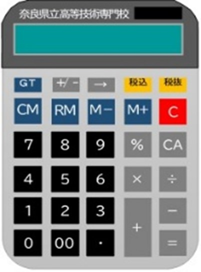

オフィスビジネス科
オフィスビジネス科では、事務系職種への就職を目的に、一般事務、簿記会計、原価計算、税務会計、給与計算及び計算実務などの科目を習得し、パソコン会計、OA機器のパソコン操作を身に付けます。在校中の各種資格検定を通して、技能習得の進捗を客観的に把握でき、就職への可能性を大きく広げることができます。

オフィスビジネス科はこんな人におすすめ！
- 会社の経理部門で働きたい！
- 苦手なパソコンを
克服したい！ - 社会人としての基本を
１から身に付けたい！
訓練科の特徴
実務に直結する事務スキルの習得
一般事務から経理・会計業務まで、幅広い業務に対応できるスキルを身に付けます。PCを使った文書作成や表計算、会計ソフトの操作など、オフィスで即戦力となる実践的な技術を習得します。

資格取得に向けた徹底サポート
簿記2級や秘書検定など、就職に有利な資格取得を重視したカリキュラムを提供。資格試験対策講座を通じて、効率的に学び、確実に資格を取得するためのサポートを行います。
経理・会計の専門知識の習得
簿記、会計、税務、給与計算など、企業で必須の経理スキルを基礎から応用まで学びます。実務に即した内容で、正確かつ効率的に経理業務をこなせる力を養います。
カリキュラム
| 簿記会計 | 仕訳帳、総勘定元帳、補助簿、試算表、財務諸表 |
|---|---|
| 原価計算 | 個別、総合、実際、標準、直接、CVP分析 |
| 税務会計 | 法人税、消費税 |
| 計算実務 | 伝票集計、利息計算、利益率、給与計算 |
| 秘書実務 | ビジネスマナー、電話応対、敬語、接遇用語、一般知識 |
| 実技 | 弥生会計、ワード、エクセル、パワーポイント、簿記会計実習、 税務会計実習、計算実務実習など |
時間割例
| 月 | 火 | 水 | 木 | 金 | |
|---|---|---|---|---|---|
| 1限目 （08:50～09:35） |
簿記 | 簿記 | 簿記 | 簿記 | 簿記 |
| 2限目 （09:35～10:20） |
|||||
| 3限目 （10:30～11:15） |
簿記 （税務計算） |
簿記 （税務計算） |
簿記 （税務計算） |
簿記 （税務計算） |
簿記 （税務計算） |
| 4限目 （11:15～12:00） |
|||||
| 5限目 （13:00～13:45） |
PC | 原価計算 （マナー） |
PC | 原価計算 （マナー） |
PC |
| 6限目 （13:45～14:30） |
|||||
| 7限目 （14:40～15:25） |
PC | 原価計算 （マナー） |
PC | 原価計算 （マナー） |
PC |
| 8限目 （15:25～16:10） |
主な就職先
職種
- 一般事務
- 総務事務
- 経理事務
- 営業事務
- その他事務系職種全般
業種
- 会計事務所
- 税理士事務所
- 一般企業の事務部門

目指せる資格
- 日商簿記検定・全経簿記検定（2級・3級）
- 税務会計 法人税法、消費税法（2級・3級）
- コンピュータサービス技能評価試験
ワープロ部門、表計算部門（2級・3級） - 秘書検定（2級・3級）
- 計算実務能力検定（３級）
年間スケジュール
| 4月 | 入校式 |
|---|---|
| 5月 | |
| 6月 | 簿記３級 |
| 7月 | ワープロ検定 |
| 8月 | |
| 9月 |
| 10月 | 消費税法 |
|---|---|
| 11月 | 簿記二級 |
| 12月 | |
| 1月 | 専門校展 |
| 2月 | 法人税法・秘書検定 |
| 3月 | 修了式 |